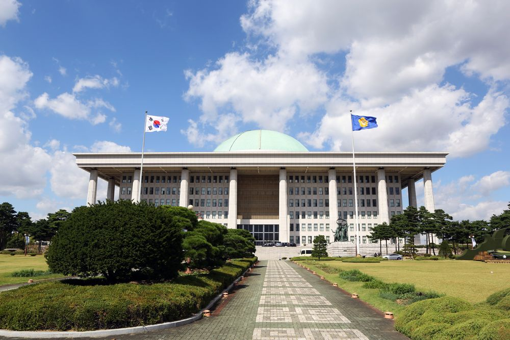

정치
대한민국의 정치를 설명한 문서다.
식민지 시절을 겪은 나라들 중 민주주의를 대한민국만큼 성공적으로 이뤄낸 나라는 거의 없다. 민주주의지수 수치도 아시아 국가들 중에서 제일 높은 점수에 속한다. 국민이 정치에 관심이 있었기에, 4.19 혁명, 부마민주항쟁, 5.18 민주화운동, 6월 민주항쟁 등이 발생하여, 민주주의가 정착하였다. 또한 과거 민주화 투쟁을 하던 윗 세대들이 후세대들에게 민주주의와 과거 반 (反) 독재 항쟁의 역사를 가르치고 잊지 않으려고 노력하고 있기에 한국 청소년들과 청년들은 주요 선진국과 비교해도 자국 정치에 관심을 가지는 정도가 꽤 높은 편이다. 실제로 박근혜 퇴진 운동에서도 수많은 학생들과 청년들이 시위에 참여하여 민주주의 의식이 젊은층에도 퍼져있음을 증명하였다.